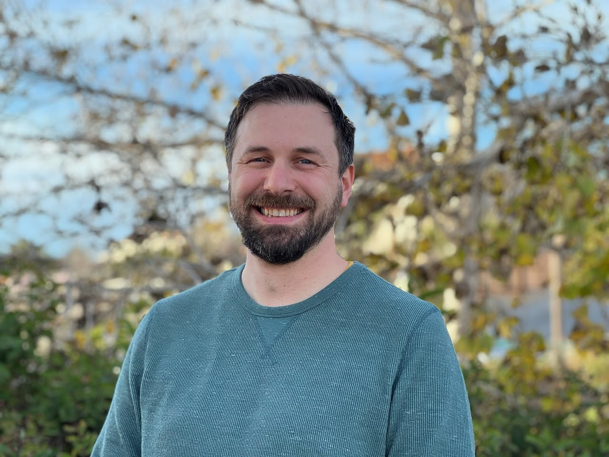

Zak Espley
(530) 270-9252
zak.espley@gmail.com
linkedin.com/in/zakespley
github.com/ZakEspley
EDUCATION
San Jose State University - M.S. Physic MAY 2024
- Received Quantum Engineering NSF Research Trainee Fellowship
- Relevant Coursework: Introduction to Quantum Computing, Quantum Architecture, Quantum Mechanics, Quantum Field Theory, Passive Microwave Engineering, and Optics Lab. Additional coursework: Mathematical Methods, Classical Mechanics.
UC Santa Barbara - B.S. Physics JUNE 2014
SKILLS
- Quantum Technologies: Superconducting qubits, Cavity/Circuit QED, Transmon Qubits, Josephson Junctions
- Software & Tools: Ansys HFSS, KLayout, Python, Jupyter, Qiskit, Numpy, QuTip, Julia, HDF5, Matplotlib, Microwave Circuit Design (Keysight ADS)
- Modeling & Simulation: Hamiltonian derivation, quantum state evolution, Euler/Runge-Kutta solvers, system design using Lagrangian/Hamiltonian mechanics
Programming languages: Python, Mathematica, Julia and Javascript..
Other Technology: Eagle CAD, KiCad, 3D printing, Fusion 360, circuit design/soldering/testing, robotics, generalized equipment troubleshooting, Linux, microcontrollers.
EXPERIENCE
Lawrence Livermore National Labs - Quantum Coherent Device Intern JUNE - SEPT. 2024
- Used Circuit QED to design a superconducting transmon circuit for quantum analog simulation (Quantum ASIC) of neutrino-neutrino scattering event.
- Utillized the Jaynes-Cumming model and Schrieffer-Wolff transformation to help design ZZ coupler between neutrino circuits to facilitate neutrino flavor interactions.
- Collaborated with particle physicists and device physicists to design.
San Jose State University - NSF QENRT Fellow JANUARY 2023 - JANUARY 2024
- Simulated Two Level Systems in oscillating electric fields.
- Transferred HFSS design to KLayout GDS using Python scripted components.
- Characterize coupling strengths required for optimal energy level tunability.
- Founded the Society of Quantum Engineers San Jose State University chapter.
San Jose State University - Teaching Assistant SEPTEMBER 2022 - MAY 2024
- Designed presentations and assessments to enhance provided instructional materials.
UC Santa Barbara - Research Assistant JUNE 2021 - JUNE 2022
- Developed and maintained a microfluidic droplet generation system, designing a data collection method and an image processing algorithm to analyze droplet size distribution.
- Designed, programmed, and built a temperature probe using MicroPython and a Raspberry Pi Pico microcontroller.
UC Santa Barbara - Academic Coordinator JULY 2016 - JANUARY 2023
- Worked in a team of 5 Academic Coordinators to manage and maintain classes for 4000 students.
- Wrote Python, ImageJ, and Arduino scripts to enhance data taking capabilities in the lab.
- Designed, programmed, and maintained remote controlled lab apparatus for physics labs.
- Designed, ordered, evaluated, and constructed new instructional labs and lab hardware.
- Built experiments to teach about laser physics, interferometry, fourier optics, & imaging.
- Troubleshot and repaired broken physics lab equipment and electronic test equipment.
- Developed, refined, and documented new experiments for senior physics students.
- Promoted internally from Laboratory Assistant position after 2 years.
Keysight Technologies - R&D Process Engineer JUNE 2014 - JULY 2016
- Promoted internally from a Focused Ion Beam technician after 1 year.
- Developed, maintained, and documented processes for manufacturing integrated circuits for high-frequency test equipment.
- Developed and implemented test processes for integrated circuits, conducting failure analysis and optimizing designs to meet product line specifications.
- Wrote Python scripts to interface with hardware, and to collect and plot data for process monitoring.
VOLUNTEER EXPERIENCE
UC Santa Barbara Maker’s Club SEPTEMBER 2021 - JUNE 2022
- Advised and attended weekly meetings of students who wanted to learn to use maker space technologies.
- Taught skills including CAD, 3D printing, soldering, circuit design, and microcontroller programming.
UC Santa Barbara Weld Lab APRIL 2019 - FEBRUARY 2020
- Helped design and build an optical system that utilized a digital mirror device to generate arbitrary potential wells to apply forces on a Strontium bose-einstein condensate.
- Helped construct an apparatus for creating a magneto-optical trap to trap strontium atoms from laser-ablated strontium oxide.
- Worked with M-Squared Solstis tunable Ti:Sapphire Laser system.